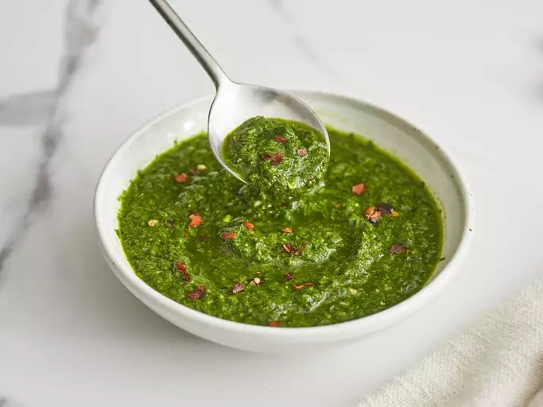

Home
Chimichurri Sauce

Description
Argentinian sauce made from parsley, garlic, olive oil and other herbs and spices.
Ingredients
- Bunch flat-leaf parsley
- 1/2 cup fresh cilantro
- 1/2 cup olive oil
- 1/4 cup fresh oregano
- 4 garlic cloves, chopped
- 3 tbps lemon juice
- salt and pepper, to taste
Directions
- Place all ingredients in a blender.
- Pulse until a thick sauce forms, scraping down sides as needed.